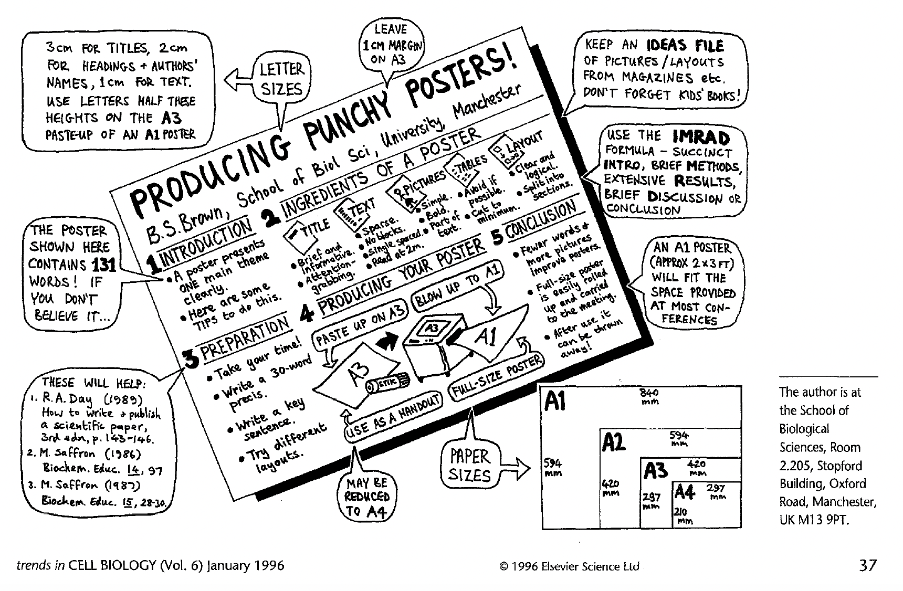
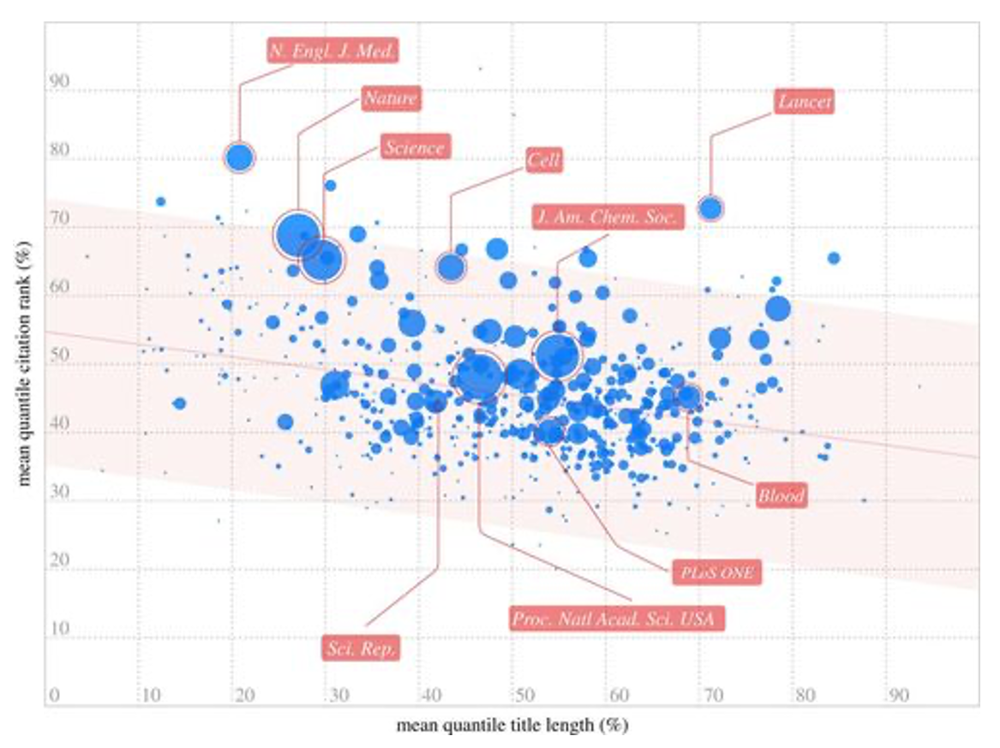
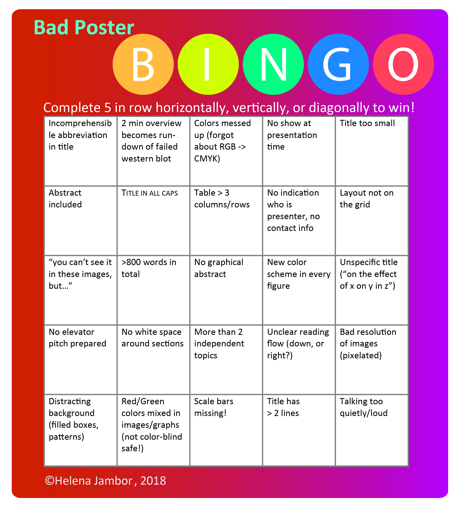

Poster preparation: The ultimate resource guide
With the pandemic over for good, we are truly back to in-person conferences and their packed poster sessions. Think about the numbers: each year, well over hundred thousand poster are presented at academic and industry networking events. Think about the effort: each poster is made in many hours spent trying to concisely communicate a message. Think about the room for improvements see also my article: many of the posters are densely filled with text and fail to “spark joy”. Here is the second part of my poster-how-to, tips for tools and visuals for better posters in 2024:
Tools for poster preparation
Numerous tools exist that help scientists prepare electronic posters for conferences. Common are software for designing slides, vector-design software, and web based applications. Vector design software allow for zooming of visualizations without quality loss – meaning not pixelation will suddenly appear when a poster designed on small screen is printed at life size. Here is a roundup of some useful ones:
Open source software
- Inkscape: A free vector graphic software that is rapidly being developed and becoming more usable every day. In Inkscape you can directly import of icons from icon libraries, e.g., when needing symbols. Inkscape also permits scripting: images can be processed with ImageJ and data can be visualized with R inside Inkscape. Plus, a practical guide for biologists exists (Cvrčková, 2019 - pay or scihub).
- ImageJ/FIJI: An open-source image processing software, offers extensive possibilities for image processing. For layouting of posters primarily composed of images, software extensions (“plugins”) can be used, e.g., ScientiFig or FigureJ. Both plugins allow users to arrange multiple images, graphs, and annotations into a single composite figure and has tools for aligning, resizing, and labeling images.
Software
- Adobe Illustrator / Affinity Designer / CorelDraw: The proprietary alternatives to Inkscape. Adobe Illustrator is widely used and tutorials help new users along (Culley, 2016).
- PowerPoint / Keynote: Often PowerPoint will produce posters of sufficient quality, especially when the canvas size is adjusted and slides are exported as vector graphics such as PDF. When saving your graphical abstract check the settings to make sure that your images are not compressed to prevent pixelation artifacts.
Web-based
- Flourish: online data visualization tool that allows users to create visually appealing charts – which can be combined into data-driven posters. Flourish has numerous customizable templates for common but also uncommon charts. Plus, can handle relatively large datasets.
- Figma: is mostly used for prototyping in design, but I have come across many people that use it also use it for poster design. A plus, it allows collaborative work and graphic editing, and the outputs are vector graphic designs. Especially for collaborative work and prototyping Figma can be integrated with a number of other tools, e.g. SLACK, Adobe Cloud, Confluence, Dropbox etc.
- Canva: used for designing visuals for many purposes, popular for its user-friendly interface. Includes a number of templates, a built-in icon and photo library, and also permits real-time collaboration. It is possible to upload contents, such as microscopy image, charts, or user icons, such as the logo of your institute or funder. *BioRender: proprietary web-based software with a very large biomedical icon library, whose appearance, shape, color, and detail, cannot be changed. A drawback to many labs is also BioRender’s continuous adaptation of licenses, while an advantage is the its interface with public databases, such as the Protein Data Bank.
- MindtheGraph: MindtheGraph is an online platform designed to help users create scientifically accurate and visually appealing illustrations, particularly for academic and research purposes. It offers a Also includes a library of pre-made scientific illustrations and templates. User-friendly drag and drop, and collaborative mode are possible.
For a more thorough review of common software and their advantages/disadvantages:
- Martin, K., 2020. A picture is worth a thousand words. MEW 29, 28–34.
- Perkel, J.M., 2020. The software that powers scientific illustration. Nature 582, 137–138. see paper
Catchy visuals
The first thing most audiences see from afar are key visuals. These can be large pictures, charts, icons, or a simple graphical abstract. Some posters even are entirely visual, presenting data in a story format e.g. as a comic strip. In particular icons and symbols, which we learn early and thus understand almost intuitively, work well when we want to rapidly grab attention. Icons can even replace or support text, e.g. in titles, legends, or axis labels. Today, we have a vast number or open access resources at our fingertips, and the collection of free icon is expanding daily. Most resources contain icons in either adaptable format (“SVG”) or as image (“PNG”), or both.
General icons:
- Fontawesome is a Unicode-based icon library that can be installed locally as a font for graphic programs, downloaded as full icon library, or downloaded as individual SVG images.
- Nounproject a collection of icons from various designers. Hence, the available icons are vast, but also not matched in style. These icons can be used after registration for free with attribution as SVG or PNG.
- SVGrepo currently largest SVG icon library, icons are searchable by style.
- Flaticon
Biology & Medicine icons
- Phylopic offers shapes of numerous animals, plants and further model organisms, e.g. for phylogenetic trees.
- EBI icon library provides some general scientific icons.
- Reactome provides scientific pictograms and chemical drawings for free re-use and encourages the upload of user-designed pictograms for sharing with the scientific community.
- Smart is a free collection of medical drawings from Servier Medical Art and can be downloaded as a full slide-deck and used with attribution.
- Bioicons is an expanding set of biology and laboratory icons from petri dishes to model organisms available under free licenses (CC0). Initially by Servier, the drawings are expanded with user provided samples.
- Health Icons is a global volunteer effort to create common icons for many specialized medical scenarios available under creative commons license (CC0).
- SciDraw is a repository of free SVG cartoons for science supported by the Sainsbury Wellcome Centre, UK
- Healthicons offer many icons specifically dedicated to medical procedures, diagnoses, and eqipment that is not often included in regular icon libraries.
For inspiration check out the first icon library, designed by Gerd Arntz for the Isotype project in the early 1900s. Despite Otto Neurath and Gerd Arntz intending the isotype project as a common worldwide visual language, their relatives decided to hold copyright link.
Understandable title and text
The number of words that Bernard Brown showed on his poster about poster design is 131 – and he hints to the fact that this may be enough for academic conference posters. Thus, concise writing is essential for posters.

Brown - producing punchy posters
But the first impression of a poster comes from a title – if this is cluttered with abbreviations clear to you and your labmates but not the wider attendees, they might not dare to stop. But even the title should also be short and there is science to support this. Letford et al analysed 20,000 papers and showed that the shorter the title, the more citations a paper received. This may be multiple factors, but one aspect is that shorter titles are easier to understand.

The advantage of short paper titles, figure from letchford 2015.
Catchy Colorschemes
The industrial designer Henry Dreyfuss is cited saying that “colours are the exclamation marks in design” – color perception is immediate and we cannot ignore colors. Colors should be used 1. To focus the attention, by applying color where readers should look first; 2. Consistently, colorschemes should not change from one panel to the next if they have the same meaning; 3. Accessible to all audiences, i.e., colors should have high contrast to background and be visible to colorblind.
Tools for Colors:
- Test accessibility of your colours, e.g., by rendering your display (iOS: accessibility>display>colorfilters) or by uploading a screenshot of the poster to a web-tool.
- Check color contrast:
- Color blind friendly?
- Pick colors for data
- Test if colors work with charts
- 2500* palettes, searchable, exportable!! Yan Holz did it again..
Design a color scheme:
Pick color from image:
New poster formats
A lasting effect from COVID times is that conference formats have forever become more diverse. Hybrid conferences are here to stay to accommodate various reasons for virtual attendance, from care work at home, limited travel budgets, or problems getting visa’s. Hybrid conferences have not only online or hybrid poster sessions, but often also poster flash talks or online-only rooms for mingling, e.g. in gather town. This diversity requires more preparation – the poster flash talk needs one easy and pretty slide with the key information, the digital poster usually is smaller than its print counterpart, and the online-room require an extra level of confidence.
Prepare!
And last, get feedback on the poster before print and have a short “Elevator pitch” ready. You may only have one minute to grab the attention of someone in the coffee line, rushing past your poster, so a ready-to-fire run-down of the main points is essential. For feeedback, get your colleaagues to speficifcally comment on the readability of poster text and figures. It turns out that most poster presenters do not receive feedback before hitting the print button See paper. Two questions you may ask: 1. What do you see first? This ideally is the title and the key visual, if not revise. 2. Ask someone to explain the poster back to you. When they get stuck it usually is because something is not quite clear. You can also use this silly “Bad Poster Bingo” to make sure your poster does not disappoint.

Enjoy a game of bad poster bingo - or check it to avoid common mistakes. Get a printable version:
A number of guides introduce life scientists to poster design:
- Barker, E., Phillips, V., 2021. Creating conference posters: Structure, form and content. J Perioper Pract 31, 296–299. See paper
- Block, S.M., 1996. Do’s and don’t’s of poster presentation. Biophysical Journal 71, 3527–3529. See paper
- Boullata, J.I., Mancuso, C.E., 2007. A “How-To” Guide in Preparing Abstracts and Poster Presentations. Nutr Clin Pract 22, 641–646. See paper
- Brown, B.S., 1997. Poster design—Six points to ponder. Biochemical Education 25, 136–137. See paper
- Brown, B.S., 1996. Communicate your science! … Producing punchy posters. Trends Cell Biol 6, 37–39. See paper
- Erren, T.C., Bourne, P.E., 2007. Ten simple rules for a good poster presentation. PLoS Comput Biol 3, e102. See paper
- Faulkes, Z., 2021. Better Posters: Plan, Design and Present an Academic Poster. Pelagic Publishing Ltd.
- Fraser, J., Fuller, L., Hutber, G., 2016. Creating Effective Conference Abstracts and Posters in Biomedicine: 500 Tips for Success. CRC Press.
- Jambor, H.K., 2023. Insights on poster preparation practices in life sciences. Front Bioinform 3, 1216139. See paper
- Wang, A., Greda, D., Carroll, S., Bianchi, L.M., Cunningham, C.D., 2022. Preparing and Giving Effective Poster Presentations, in: Research During Medical Residency. CRC Press.